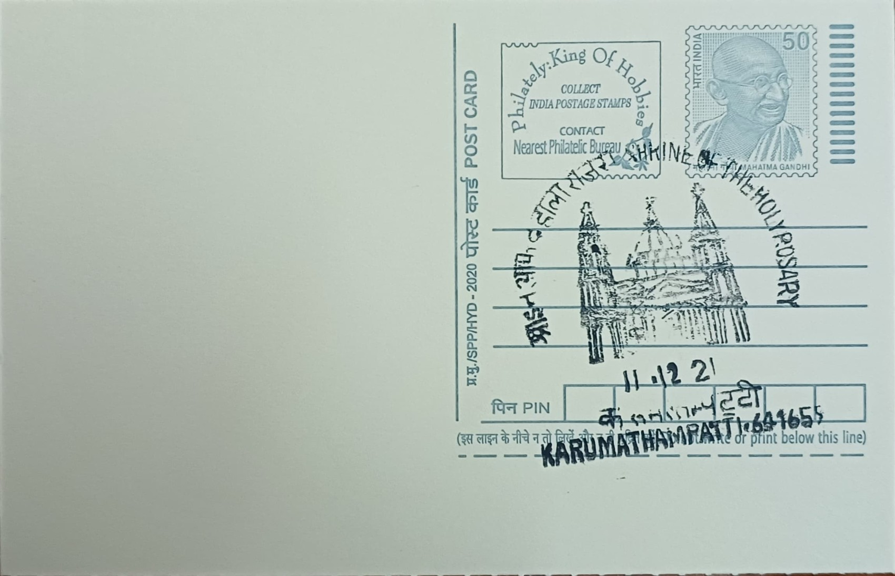

Our Lady of Holy Rosary Shrine
எங்கள் அன்னை ஜெபமாலை ஆலயம்


The Basilica of Our Lady of the Holy Rosary at Karumathampatti traces its origins to around 1640, when Portuguese missionaries active in the Coimbatore region established a chapel dedicated to Mary under the Holy Rosary devotion. Local tradition holds that the Jesuit missionary and martyr Saint John de Britto visited the settlement and celebrated Mass there, a claim that has become part of the shrine's founding lore even though it rests more on oral tradition than on documentary proof. The dedication to the Holy Rosary situates the shrine within a wider wave of Marian devotion introduced by European missionary orders along the trade and mission routes of seventeenth-century South India.
As a Marian pilgrimage church within the Roman Catholic Diocese of Coimbatore, the shrine occupies a significant place among Tamil Nadu's historic Catholic sites, both for its antiquity and for the scale of devotion it draws. Its importance was formally recognised on 22 July 2019, when Pope Francis raised the church to the status of a minor basilica, a distinction bishops across Tamil Nadu and Puducherry welcomed as a mark of honour extending beyond the Coimbatore diocese to the wider regional church. The shrine is valued not only by its resident Catholic congregation but also by pilgrims of other faiths who visit seeking blessings, a pattern common to several South Indian Christian shrines.
The church's history has been marked by repeated destruction and rebuilding rather than a single continuous construction. The original seventeenth-century chapel was destroyed by invading forces associated with the Kingdom of Mysore in the latter part of the 1600s, and it was later razed again during the campaigns of Tipu Sultan in 1784 amid the broader conflicts between Mysore and South Indian polities in that period. Each time, the local Catholic community rebuilt the structure, with a substantial reconstruction completed by 1803 that restored the church as the centre of worship it had been before the attacks, underscoring the resilience of the congregation across more than three centuries of upheaval.
A defining feature of the shrine is its annual feast, celebrated on the first Sunday of October, which coincides with the month the Catholic Church traditionally dedicates to the Holy Rosary. The feast draws large congregations from Coimbatore district and beyond for special Masses, processions, and novena services, making it one of the more prominent Marian feast gatherings in the region. The elevation to basilica status in 2019 has further increased the church's visibility, formally linking it to the pope and placing it in the company of a select number of basilicas across India recognised for their historical and spiritual significance.
Administratively, the shrine functions as a parish church of the Diocese of Coimbatore and continues to host regular liturgical functions alongside its pilgrimage activities, with diocesan clergy overseeing both parish duties and the logistics of the October feast crowds. The basilica's enhanced status has also brought renewed attention to its physical upkeep, with periodic restoration and maintenance work carried out to accommodate the pilgrim traffic the feast generates each year. Today the basilica at Karumathampatti operates as both a working parish for its local Catholic population and a recognised pilgrimage destination, drawing visitors whose numbers swell markedly each October around the feast of the Holy Rosary.
| Date of Introduction | September 29, 2017 |
|---|---|
| Address | Sub Postmaster, |
| Karumathampatti SO, | |
| Coimbatore (dt.), Tamil Nadu - 641659. |